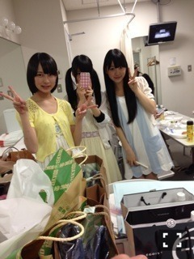

2014/0328Fri1周年

今日3月28日で私達2期生は
1歳になりました！
早かったようで濃くてこの1年で
色んな事があったなぁ...
○3月28日最終審査
みんな緊張していてまだ名前も
顔も分からない子ばかり。
合格して周りとよろしくねなんて
声かけあったなぁ...>_<...
私は人見知り全開だったけど
絢音とはこの時から既に仲良くて
カメラに向かって2人で変顔とか
してた！(笑)でも他の子には
真顔無口でガチガチで人見知り
しちゃっていました

謎のサーモンチョイス
レッスンが始まって溶け込めなくて
東京が怖くて初めは自分の殻に
閉じこもっていました。
いわゆるぼっち。
話す事が大好きな私が一日中
口を開かない時もあって辛くて
毎日泣いてたなぁ〜
レッスンも岐阜から通っていたので
なかなかついていけなくて
私何してるんだろうって思ったり
アイドル向いてないんじゃないかって
思ったり...
○プリンシパルお披露目
プリンシパルのお披露目が決まって
みんなそれぞれ自己紹介を考えて！
私はこれっていう特技が無かったから
必死に考えた自己紹介がネガティブ
すぎてボツになった事もありました(笑)
初めてのステージ...
とにかくみんなガチガチで楽屋でも
お弁当を食べて良いのかどうか
戸惑ったり(笑)
ファンの皆さんにどうゆう反応を
されるのかすごく不安でした
でもいざステージに立つと皆さん
本当にあったかくて挨拶が終わって
楽屋に帰ってくるみんなの顔が
すごい輝いていたのを今でも
覚えています！

○初めての乃木どこ
2期生が初めて出させていただいた
乃木どこ。ずっとテレビで見ていた
番組だからとにかく緊張しぱなっしで...
足を閉じて座っている事さえも
つらくてみんなで頑張ったなぁ(笑)
バラエティに慣れていない私達に
バナナマンさんも優しくて
この乃木どこ収録は今でも忘れない
大切な思い出です
○初めての雑誌撮影
週プレさんで初めて雑誌撮影を
していただきました！2期生の
制服も用意されていて感動しました
この時くらいから純奈と話すように
なって勝手にこの子とは気が合うなぁ
と思っていました^_−

そして全握のミニステージでの
パフォーマンスや全国ツアー@zeep、
代々木第一体育館、武道館、横アリ
など沢山のステージを経験させて
いただいて私達は沢山の事を学んで
大きく成長できました
みんな個性があって優しくて
思いやりのあるあったかい私に
とっては家族のような存在です！
これからも先輩達に早く
追いつけるように一緒に頑張って
いこうね^_−☆大好きだ〜
そしてPON祭り、ZIPフェス
めっちゃ楽しかった♡♡
次のブログでまた書きますね！

PONは久しぶりのポニーちゃん
ライブでもファンの方が2期生
1周年おめでとうと言ってくださって
嬉しかったなぁ...(T . T)
そして今日はnogibingo2最終回！
あっという間でしたか充実した収録で
毎回毎回色んな経験ができました！
ラストは感動です。
是非見てください〜
ではでは
おやすみおな(ヽ´ω`)
2014/03/28 22:00
コメント(528)
未央奈しかー！
1周年おめでとう！
もう1年も経ったんやなー
時間経つんめっちゃ早いな笑
じゃあLIVEお疲れさん！
おやすみおなー！
とし☆
1周年おめでとう！
もう1年も経ったんやなー
時間経つんめっちゃ早いな笑
じゃあLIVEお疲れさん！
おやすみおなー！
とし☆
ついに二期生も一周年ですね( ^ω^ )
最初は正直二期生を受け入れられない日々が続きました。なぜかわかんないけど(笑)
でもどんどん日が過ぎていくうちに徐々に受け入れられるようになって今は純粋に応援してます^_^
一期生のひいてくれたレールに乗りつつも二期生には二期生の味をだしていってくれたらって思ってます！
これからも体に気をつけて頑張ってね！！
最初は正直二期生を受け入れられない日々が続きました。なぜかわかんないけど(笑)
でもどんどん日が過ぎていくうちに徐々に受け入れられるようになって今は純粋に応援してます^_^
一期生のひいてくれたレールに乗りつつも二期生には二期生の味をだしていってくれたらって思ってます！
これからも体に気をつけて頑張ってね！！
1周年おめでとうだぜ
堀ちゃん、こんばんは！
今バイトが終わってブログ拝見中ー
二期生、1歳の誕生日おめでとう♪
今日のPON祭りめっちゃ行きたかった。
NOGIBINGO2見て寝るねー
おやすみおな！
今バイトが終わってブログ拝見中ー
二期生、1歳の誕生日おめでとう♪
今日のPON祭りめっちゃ行きたかった。
NOGIBINGO2見て寝るねー
おやすみおな！
みおなやっほー(=ﾟωﾟ)ﾉ
二期生もう一歳かー( ´ ▽ ` )
早いなー
これからもいろんな経験して乃木坂の一員として頑張ってね！
ポニテみおな可愛い(((o(*ﾟ▽ﾟ*)o)))
そんじゃまた( ´ ▽ ` )ﾉ
二期生もう一歳かー( ´ ▽ ` )
早いなー
これからもいろんな経験して乃木坂の一員として頑張ってね！
ポニテみおな可愛い(((o(*ﾟ▽ﾟ*)o)))
そんじゃまた( ´ ▽ ` )ﾉ
二期生誕生日おめでとう(｡ｰωｰ)ﾉﾞ
この一年間早かったと思います。
初めての乃木どこを見て堀ちゃんのことを好きになって、きいちゃんとのペア握手会で初めて握手して推そうと思ったのも今でも覚えてます。
そしてこの一年で堀ちゃんは成長したと思います！
今日のPON祭りでの「ロマンスのスタート」のときの笑顔、すごいよかったです☆
これから二期生も上り坂で頑張ってください！
おやすみおな(ヽ´ω`)
この一年間早かったと思います。
初めての乃木どこを見て堀ちゃんのことを好きになって、きいちゃんとのペア握手会で初めて握手して推そうと思ったのも今でも覚えてます。
そしてこの一年で堀ちゃんは成長したと思います！
今日のPON祭りでの「ロマンスのスタート」のときの笑顔、すごいよかったです☆
これから二期生も上り坂で頑張ってください！
おやすみおな(ヽ´ω`)
みおなちゃんこんばんは♪
１歳のアニバーサリーおめでとう！
一枚目の写真かっこいいね♪
辛かった思い出も
今は大事な宝物になってるのかな
これからも皆と力を合わせて輝いてね！
ノギビンゴ最後かー
寂しいけど大事に観ようっと
ノギビンゴ３はゴールデンタイムかな！
ヽ(・∀・)ノ笑
ロマンスのスタートMV
メガシャキ代金307円だったらなと思った
狙いすぎか(笑)
１歳のアニバーサリーおめでとう！
一枚目の写真かっこいいね♪
辛かった思い出も
今は大事な宝物になってるのかな
これからも皆と力を合わせて輝いてね！
ノギビンゴ最後かー
寂しいけど大事に観ようっと
ノギビンゴ３はゴールデンタイムかな！
ヽ(・∀・)ノ笑
ロマンスのスタートMV
メガシャキ代金307円だったらなと思った
狙いすぎか(笑)
未央奈ちゃんこんばちは〜！
今日は未央奈ちゃんカラーのサイリウムを購入したよん♡♡♡♡♡
来年にはもう二年か！と言える位突っ走って行ってね!!
今日は未央奈ちゃんカラーのサイリウムを購入したよん♡♡♡♡♡
来年にはもう二年か！と言える位突っ走って行ってね!!
二期生の1歳おめでとう♪
堀ちゃんは、最初の乃木どこ？で出たときは緊張感出てるなぁと思ったけど、最近は、楽しそうに笑顔が出てきたなと思ったよ(^_^)
これからも頑張って下さい！
そして、俺の友達、やんしお(*´▽｀*)♪
をよろしくお願いいたします(・ω・｀=)ゞ
応援してます!!
りんごったんと☆れなち推し(・ω・｀=)ゞ
一歳おめでとうΣ（・□・；）
私も青森から今月からきましたが、
東京は怖くて部屋から出られないです。
私も青森から今月からきましたが、
東京は怖くて部屋から出られないです。
こんばんは(^O^)
みおちゃん…１周年おめでとう！
o(^-^o)(o^-^)o
７ｔｈでは…センターと福神として…不安やプレッシャーと戦っていましたね！
でも…大きく飛躍出来たと思うよ♪
今は…表情も優しく見えるし…力も抜けて自分らしく表現出来ているように思える！
本当に…素晴らしい一年でしたね♪
(((o(*゜▽゜*)o)))
二年目も…自分を信じて頑張ってくださいね…
m(_ _)m
みおちゃん…１周年おめでとう！
o(^-^o)(o^-^)o
７ｔｈでは…センターと福神として…不安やプレッシャーと戦っていましたね！
でも…大きく飛躍出来たと思うよ♪
今は…表情も優しく見えるし…力も抜けて自分らしく表現出来ているように思える！
本当に…素晴らしい一年でしたね♪
(((o(*゜▽゜*)o)))
二年目も…自分を信じて頑張ってくださいね…
m(_ _)m
一周年おめでとう
いきなりセンター抜擢されて大変やったとおもうけどスゴい経験値になった思うし今のみおなは成長した姿になってるよ
二期もみんな成長してるし今年の二期飛躍を期待してる
２期生１周年おめでとうございます＼(^o^)／
１歳になった２期生の活躍期待してます！
おやすみおな(ヽ´ω`)
１歳になった２期生の活躍期待してます！
おやすみおな(ヽ´ω`)
1周年おめでとう！
堀ちゃんは特にこの1年ですごいたくさん成長したよね(^^)
ほんとに驚かされました
2年目も飛躍の年にしてください☆
あ、ぽにーめっちゃ好きです(ﾉ∀＼*)
なす
みおな
二周年おめでとー
はやいねほんとに
これからもよろしく
ノギビンゴ見るよ
今日もお疲れ様でした（*^_^*）
そして、２期生１周年おめでとう(^O^)
これからも、ファンとして、よろしくね(^O^)／
そして、２期生１周年おめでとう(^O^)
これからも、ファンとして、よろしくね(^O^)／
みおなちゃん(´ฅ•ω•ฅ｀)♡
1周年おめでとう！！
いろんなことを乗り越えてきたみおなちゃんは、ほんっとにキラキラしてるよ☆
これからも、いろいろあるとおもうけど、私はずっと応援してるよV(^_^)V♡
これからも、2周年、3周年…と頑張ってね！！
そして PON！祭りお疲れ様！！
私はお家から応援していたよ…！！笑
これからも大好きです♡♡
みっすー
1周年おめでとう！！
いろんなことを乗り越えてきたみおなちゃんは、ほんっとにキラキラしてるよ☆
これからも、いろいろあるとおもうけど、私はずっと応援してるよV(^_^)V♡
これからも、2周年、3周年…と頑張ってね！！
そして PON！祭りお疲れ様！！
私はお家から応援していたよ…！！笑
これからも大好きです♡♡
みっすー
一周年おめでとー
２期生の皆さん
１周年おめでとうございます♪
２周年､３周年と続くことを
お祈り申し上げます☆
ほっちゃん
これからも応援してますよー
１周年おめでとうございます♪
２周年､３周年と続くことを
お祈り申し上げます☆
ほっちゃん
これからも応援してますよー
おめでと♡
最初は2期生どうなのかなーって
思ったけど堀ちゃんがセンターなって
だいじょぶかなー？って心配だった笑
（って、が多くて読みづらいね笑）
でも堀ちゃんをきっかけに二期生も
知るようになって、今は堀ちゃんが
ふわふわしてて心配だよ‼︎笑
長くてすいません⤵︎
二期生一歳おめでとう〜！（≧∇≦）
これからも一日一日が有意義になるように応援します！
これからも一日一日が有意義になるように応援します！
今日のNOGIBINGO観ます！
前回の予告で感動的だったので今夜は泣くと思います。
では！
p.s
寿司のネタで好きなのは、サーモンです。笑
堀ちゃんは寿司のネタでなにがすきですか？
前回の予告で感動的だったので今夜は泣くと思います。
では！
p.s
寿司のネタで好きなのは、サーモンです。笑
堀ちゃんは寿司のネタでなにがすきですか？
未央奈、２期生１周年おめでとう！！
未央奈のとって、色んな事があり過ぎた
良い１年だったよね。
ツライ事も沢山あったと思うけど、未央奈が
頑張ってくれたおかげで、俺は未央奈に出会えた。
スゴイ感謝してる。ありがとう。
これからが、未央奈の始まりだね。
ヨロシクね。
未央奈のとって、色んな事があり過ぎた
良い１年だったよね。
ツライ事も沢山あったと思うけど、未央奈が
頑張ってくれたおかげで、俺は未央奈に出会えた。
スゴイ感謝してる。ありがとう。
これからが、未央奈の始まりだね。
ヨロシクね。
1周年おめでとう(^^)
これからも頑張ってね！
これからも頑張ってね！
乃木坂46
２期生の皆様
お誕生日
おめでとうございます
私、４月１６日に、５７歳になる、乃木坂ハコ推しのおじちゃんです！
２期生の記念日に
ライブがあったなんて、
運命ですね。
ＰＯＮ！祭り
楽しかったです。
みおな、可愛い！
きらきら光っていたから、すぐに見つけられました。
みおなには、
五福神の輝きがあるね。
もっともっともっともっと自信を持って、頑張ってくださいね。
期待しています。
また、コメントします。
私、 乃木坂46のこと、 みおなのこと、
ずうーっと見守ってるよ！
２期生の皆様
お誕生日
おめでとうございます
私、４月１６日に、５７歳になる、乃木坂ハコ推しのおじちゃんです！
２期生の記念日に
ライブがあったなんて、
運命ですね。
ＰＯＮ！祭り
楽しかったです。
みおな、可愛い！
きらきら光っていたから、すぐに見つけられました。
みおなには、
五福神の輝きがあるね。
もっともっともっともっと自信を持って、頑張ってくださいね。
期待しています。
また、コメントします。
私、 乃木坂46のこと、 みおなのこと、
ずうーっと見守ってるよ！
一周年おめでとう！
これからも応援してるので
頑張ってください。
タケヤマ
未央奈ちゃん( ´ ▽ ` )ﾉ
初コメです(・∀・)ノ
今日のPON!祭り観ましたよ( ´ ▽ ` )♡
可愛すぎて鼻血出るかと思っちゃったですよ(^q^)ﾀﾗﾘ
私はNMB48も好きですが乃木坂では未央奈ちゃん単推しにゃ♡
これからも未央奈ちゃん単推しして行くから一緒に頑張りましょう\(*´ω`*)/
＊未央奈ちゃんに質問です(。・_・。)ノ
未央奈ちゃんはＮＭＢ４８の中で推してる
メンバーは誰かいますか？
ワタスは、與儀ケイラちゃん推しです(﹡•﹏•﹡)
こんばん未央奈!(^^)!
１周年おめでとうヽ(^。^)ノ
未央奈にとって色んなことを学んだ１年でしたね！
２年目も更に色んなことを経験をしていくと
思いますがいつでもどんなときも応援しているので
頑張っていこうね(*^^)v
「ロマンスのスタート」MV観ましたよ！
最後の七瀬が告白されるシーンの未央奈の表情が
めっちゃ豊かで１人でニヤニヤしてましたよ！
あんなに色んな表情の未央奈を見たのは
自分的には初めてだった気がしたので
嬉しくてニヤニヤしてました(笑)
明日はニコニコ動画ですね！
勿論、観ますんで色んな表情の未央奈を
期待しております(*^^)v
では、明日は朝から赤坂で研修なんで
早めに寝ます！
NOGIBINGO2は録画して明日帰ってから見ますね！
おやすみおな(-_-)zzz
１周年おめでとうヽ(^。^)ノ
未央奈にとって色んなことを学んだ１年でしたね！
２年目も更に色んなことを経験をしていくと
思いますがいつでもどんなときも応援しているので
頑張っていこうね(*^^)v
「ロマンスのスタート」MV観ましたよ！
最後の七瀬が告白されるシーンの未央奈の表情が
めっちゃ豊かで１人でニヤニヤしてましたよ！
あんなに色んな表情の未央奈を見たのは
自分的には初めてだった気がしたので
嬉しくてニヤニヤしてました(笑)
明日はニコニコ動画ですね！
勿論、観ますんで色んな表情の未央奈を
期待しております(*^^)v
では、明日は朝から赤坂で研修なんで
早めに寝ます！
NOGIBINGO2は録画して明日帰ってから見ますね！
おやすみおな(-_-)zzz
2期生誕生日おめでとう(*^ω^*)
これからもがんばってください
未央奈これからもがんばってね
これからもがんばってください
未央奈これからもがんばってね
ほっちゃん( ^ω^ )
乃木坂に入ってくれてありがとう♪
ほっちゃんに出会えて良かった～(*^_^*)
乃木坂に入ってくれてありがとう♪
ほっちゃんに出会えて良かった～(*^_^*)
これからも応援してます！
未央奈ちゃん、2期生1周年の誕生日おめでとうございます。
この1年でいろいろとあって未央奈ちゃんも大きく成長したんですね。
未央奈ちゃんといいなぁちゃんといい見事に人見知りを克服して本当に尊敬します。
僕はどうしても人見知りを克服できないのですがどうすれば克服できるのでしょうか？
これからも2期生メンバーみんながさらに飛躍されることを願います。
それでは
おやすみおな
この1年でいろいろとあって未央奈ちゃんも大きく成長したんですね。
未央奈ちゃんといいなぁちゃんといい見事に人見知りを克服して本当に尊敬します。
僕はどうしても人見知りを克服できないのですがどうすれば克服できるのでしょうか？
これからも2期生メンバーみんながさらに飛躍されることを願います。
それでは
おやすみおな
みおなちゃんんんん！！
今日はお疲れ様でした٩(ˊᗜˋ*)و
みにいけなかったよぉぉぉぉ（ ; ; ）
めっちゃいきたかったわぁ↓
そして1周年おめでと❤️
これからもふぁいとおおおおおおお！！！
応援してるね(´ω｀)
今日はお疲れ様でした٩(ˊᗜˋ*)و
みにいけなかったよぉぉぉぉ（ ; ; ）
めっちゃいきたかったわぁ↓
そして1周年おめでと❤️
これからもふぁいとおおおおおおお！！！
応援してるね(´ω｀)
こんばんは♪
タコですミ(´◎`)ノシ
１周年おめでとう！！！
タコはこれからもみーのこと応援するよ！！！
次に会えるのは握手会かな？？？
早く会いたいな～(ｂ^o^ｄ)
ZIP!春フェスも今日のPON祭りも参加したよ～
めちゃくちゃ楽しかったね♪
盛り上がりも最高だったっ！
NOGIBINGO2も終わるのあっという間だったな。。。
毎週高校の時の友達も巻き込んで観てたよ～
次の握手会では連れて行くね(笑)
またNOGIBINGO3もやってほしいな。
というか3と言わず、3も4も5もずっとやってほしい！
みーたちの元気な姿がタコの励みになってます←これガチね(笑)
ま、まずは2の終わりを見届けます！！！
あっ！明日のニコ生は家で観るね＾０＾
閲覧の抽選も1次は通ったんだけど2次でダメだった(泣)
行きたかった～(T-T)
でもみーを見ることができるからいいっか♪(笑)
今思うと今週は恐ろしいほど乃木坂のイベントで充実してるな～＾＾；
ZIP!春フェス→PON祭り→アメスタの放送も今日見た→明日ニコ生
素晴らしい！
乃木坂で充実とは最高すぎる(笑)
みー、連勤お疲れ様ですm(_ _)m
体調には十分に注意してね;o;
今日も一昨日も帰りの電車で風邪ひいている人がたくさんいたから
みーも気を付けて！
ビタミンCだよ！ビタミンC！
握手会で言ったけどみかんを1日に2個食べよう＾＾
もちろんそれだけじゃだめだからバランスよく食事して
睡眠もちゃんととって頑張ってね！
ちなみにこっちはもうちょっと大学の休み～(^-^)/
休みを満喫しなければっ♪
バイクで岐阜に行こうかな？？？
↓
Q、みーはミュージカルとか舞台って好きですか？？？
タコは修学旅行の時に観た「レ・ミゼラブル」が心に残って
それからミュージカルに興味を持つようになりました＾＾
地元が九州で、行っている回数はまだまだ少ないけど
今大学の休みだからこの期間に行きまくります(笑)
大学が関東でよかったっ！
ちなみに東京でのプリンシパルdeux公演は15回のうち7回行きました（＾０＾）/
最初はみんなの緊張とかが伝わってきて、後半はアドリブが入ったりと緊張の中にもいい意味での余裕も見ることができてとても面白かったな～
だから今回予約している舞台も最初の方と最後の方で同じのを2回取ったりしています
楽しみだ＾＾
プリンシパルdeux公演の時は1日だけ取れない日があったんでその時は日比谷の帝国劇場に行って当日券を買い、「レ・ミゼラブル」を観てきましたｗ
やっぱりめちゃくちゃ感動しましたよ。。。
あの時は舞台祭りだったな～(笑)
レミゼは本当に感動するんでぜひみーにも観に行ってほしいです＾０＾
↑
はい、いつものように質問です＾０＾
それでは、またミ(´◎`)ノシ
タコォ～(ｂ^o^)
タコォ～(^o^ｄ)
タコォ～(ｂ^o^ｄ)
(笑)
ニコ生楽しみ～
Love From みーに会えまくれているので気分最高な、でっかい～タコ～
こんばんはー！堀ちゃん！
PON！春祭り、お疲れさまでした！
そして、２期生１周年おめでとう！！
ここ最近、急に気温が高くなってきているので体調管理に気をつけてください！！
あと5日で新曲発売！！待ち遠しい！！
PON！春祭り、お疲れさまでした！
そして、２期生１周年おめでとう！！
ここ最近、急に気温が高くなってきているので体調管理に気をつけてください！！
あと5日で新曲発売！！待ち遠しい！！
陸上の靴は何色を買えばいいと思いますか？
2期生1周年おめでとう꒰｡•ॢ◡-ॢ｡꒱
これからも2期生のこと応援するね♡
もちろん、みおなちゃんも‼︎‼︎‼︎
これからも頑張って♡
一周年おめでとうございます
素敵な思い出を胸にこれからの乃木坂４６での活動を頑張ってください！！
僕たちは、乃木坂４６を精一杯応援しています
応援しているファンを忘れずに頑張ってください
素敵な思い出を胸にこれからの乃木坂４６での活動を頑張ってください！！
僕たちは、乃木坂４６を精一杯応援しています
応援しているファンを忘れずに頑張ってください
みおな！
二期生おめでとう！って言った
みやたくだよｗｗ
ほんとにおめでとう！
ささえるからね！
PONお疲れ～(*´-`)
みおな輝いてたよ
ちゃんとずっと見てたからね
↑怖いこと言ってごめん(汗)
1周年おめでと〜
PON！祭り行ったよ〜
実は今回がライブに行くの初めてでした
すっごく楽しくて思い出に深く残りました
ありがとうございました
PON！祭り行ったよ〜
実は今回がライブに行くの初めてでした
すっごく楽しくて思い出に深く残りました
ありがとうございました
今日のライブ行きました!!
初の生乃木坂でしたが
みんな小さかった笑笑
今日のライブで確信しましたが
ほりちゃんはアイドルに向いてますよ
今日のライブでみんなに笑顔を届けて
そしたら届いたこっちも笑顔になって
アイドルってそーゆーことですよね？笑笑
とても楽しませてもらいました笑笑
初の生乃木坂でしたが
みんな小さかった笑笑
今日のライブで確信しましたが
ほりちゃんはアイドルに向いてますよ
今日のライブでみんなに笑顔を届けて
そしたら届いたこっちも笑顔になって
アイドルってそーゆーことですよね？笑笑
とても楽しませてもらいました笑笑
バイトでいけなかったよー(；▽；)
堀ちゃん応援してるよー！
堀ちゃん応援してるよー！
こんばんは、堀ちゃん、じゃがしらずだよ。
昨日、今日のライブイベントお疲れ様でした。
今日見に行きたかったけど、仕事だから無理でした。
ＮＯＧＩＢＩＮＧＯ２終わるのさみしいです。
昨日、今日のライブイベントお疲れ様でした。
今日見に行きたかったけど、仕事だから無理でした。
ＮＯＧＩＢＩＮＧＯ２終わるのさみしいです。
デビュー1周年おめでとうございます(≧∀≦)
みおにゃ～ヾ(@゜▽゜@)ノ
一周年ｵﾒﾃﾞﾄ!! ヽ(｀･ω･´)ﾉ ｲｪｲ!!
今日の
PON祭りもお疲れさま～ヽ(・∀・)ノ
その頃 自分は
運悪く
車の衝突事故に巻き込まれてました…(;＿q)←
PON祭り行きたかったよー(´･_･`)
まぁ
幸い怪我もなく、またこーして
みおにゃのブログにコメントできてるのが嬉しいヽ(・∀・)ノ
いやぁ、マジで嬉しい！
みおにゃも、貰い事故だけは気をつけてね(/ _ ; )
あ、
そしてブログも再開したから、気が向いたらみてみて～ヾ(@゜▽゜@)ノ
またね～(ヽ´ω`)
くり＠しましま
二期生一周年おめでとう！
もう一年なんだ～
ホントに色々あったんだね
初めのころから堀ちゃん成長したなって感じるよ(^^)/
(上から目線になってしまってゴメンね)
これからも上り坂で頑張ろう！
二枚目の写真の弁当うまそー
堀ちゃんの表情もいいね(笑)
では、またね~ι(´∇｀)
もう一年なんだ～
ホントに色々あったんだね
初めのころから堀ちゃん成長したなって感じるよ(^^)/
(上から目線になってしまってゴメンね)
これからも上り坂で頑張ろう！
二枚目の写真の弁当うまそー
堀ちゃんの表情もいいね(笑)
では、またね~ι(´∇｀)
一歳おめでとう！
これからも二期生引っ張っていける存在でいて下さい！
これからも二期生引っ張っていける存在でいて下さい！
みおなちゃんはじめまして♡初コメント〜！
二期生1周年おめでとう（＾ν＾）♡♡
二期生がお披露目されたときからずっと
みおなちゃんのこと応援してたよー！！
なかなか時間がなくて握手会とかで会いに
行けなかったんだけど、４月の個別でやっと
みおなちゃんに会えることになったの*\(^o^)/*
だから今日初めてコメントした〜ヾ(＠⌒ー⌒＠)ノ
1年で二期生のみんなはすごく磨かれた気がするっ！
これからもみおなちゃんも、他の二期生のみんなも応援してるね！
ではでは〜またコメントします(*^o^*)


これからも頑張ってね！*\(^o^)/*